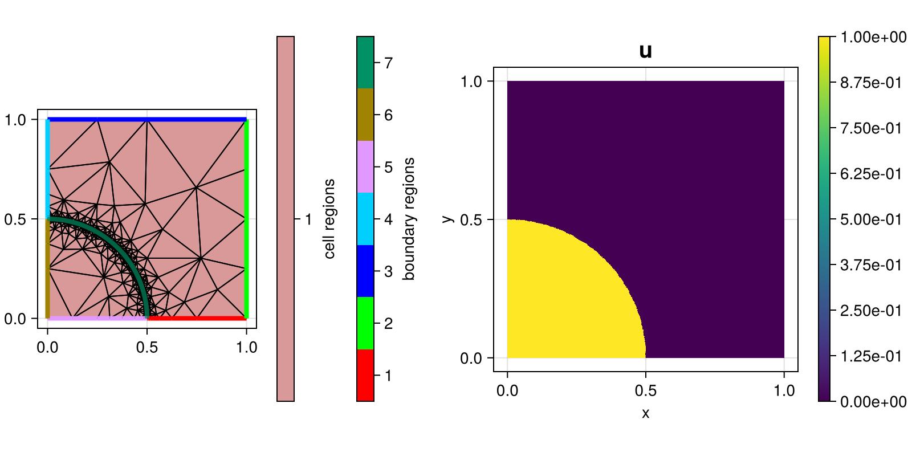

207 : Advection Upwind-DG
This example computes the solution $u$ of the two-dimensional advection equation
\[\begin{aligned} \mathrm{div} (\beta u) & = 0 \quad \text{in } \Omega \end{aligned}\]
with some given (divergence-free) advection field $\beta$ and inhomogeneous Dirichlet boundary conditions at the inflow boundary (where $\beta \cdot n < 0$ with $n$ being the outer normal vector).
In the example below the field $\beta(x,y) = (-y, x)$ and the inflow data
\[ u(x,y) = \begin{cases} 1 & \text{for } x \in [0,r] \& y = 0,\\ 0 & \text{for } x \in (r,1] \& y = 0,\\ 0 & \text{for } x = 1 \& y \in [0,1]. \end{cases}\]
is employed. The expected solution is a piecewise constant function that assumes the value one in the circle of radius $r$ and zero elsewhere.
Moreover, the upwind discontinuous Galerkin method for arbitrary polynomial degree is used for the discretization of the problem, but the continuous Galerkin method can be switched on with dg = false for comparison. For piecewise constants the DG method satisfies the maximum principle.
The grid (which is heavily refined along the interface of the circle) and the computed solution looks like this:

module Example207_AdvectionUpwindDG
using ExtendableFEM
using ExtendableGrids
using Symbolics
using LinearAlgebra
using SimplexGridFactory
using Triangulate
# wind = advection field β
function β!(result, qpinfo)
x = qpinfo.x
result[1] = - x[2]
result[2] = x[1]
return nothing
end
# exact solution
function exact_u!(result, qpinfo)
x = qpinfo.x
r = qpinfo.params[1]
result[1] = sqrt(x[1]^2 + x[2]^2) <= r ? 1 : 0
return nothing
end
# integrand of the advection bilinearform
function advection_kernel!(result, input, qpinfo)
β!(result, qpinfo) # evaluate wind β
result .*= input[1] # multiply with u_h
return nothing
end
function outflow_kernel!(xgrid)
beta = zeros(Float64, 2)
return function closure(result, input, qpinfo)
face = qpinfo.item
β!(beta, qpinfo)
result[1] = dot(beta, qpinfo.normal) * input[1]
return nothing
end
end
function upwind_kernel!(xgrid)
beta = zeros(Float64, 2)
return function closure(result, input, qpinfo)
face = qpinfo.item
β!(beta, qpinfo)
result[1] = dot(beta, qpinfo.normal)
return if result[1] > 0 ## wind blows this -> other
result[1] *= input[1] # upwind value = this
else ## wind blows this <- other
result[1] *= input[2] # upwind value = other
end
end
end
# prepare error calculation
function exact_error!(result, u, qpinfo)
exact_u!(result, qpinfo)
result[1] = (result[1] - u[1])^2
return nothing
end
function main(; nref = 4, order = 0, r = 0.5, dg = true, Plotter = nothing, kwargs...)
# grid
xgrid = make_grid(nref, r)
# problem description
PD = ProblemDescription("advection equation")
u = Unknown("u"; name = "species")
assign_unknown!(PD, u)
# advection operator
assign_operator!(PD, BilinearOperator(advection_kernel!, [grad(u)], [id(u)]; factor = -1, bonus_quadorder = 1, kwargs...))
if dg
assign_operator!(PD, BilinearOperatorDG(upwind_kernel!(xgrid), [jump(id(u))], [this(id(u)), other(id(u))]; entities = ON_IFACES, bonus_quadorder = 1, kwargs...))
end
# outflow boundary (regions [3,4]) and inflow boundary (regions [5,6])
assign_operator!(PD, BilinearOperator(outflow_kernel!(xgrid), [id(u)]; entities = ON_BFACES, regions = [3, 4]))
assign_operator!(PD, InterpolateBoundaryData(u, exact_u!; regions = [5, 6], params = [r], kwargs...))
assign_operator!(PD, HomogeneousBoundaryData(u; regions = [1, 2], kwargs...))
# solve
FES = FESpace{order == 0 ? L2P0{1} : H1Pk{1, 2, order}}(xgrid; broken = dg)
sol = solve(PD, FES; kwargs...)
# calculate L2 error and min/max value
ErrorIntegrator = ItemIntegrator(exact_error!, [id(u)]; quadorder = 2 * order, params = [r], kwargs...)
L2error = sqrt(sum(view(evaluate(ErrorIntegrator, sol), 1, :)))
@info "L2 error = $L2error"
@info "extrema = $(extrema(sol.entries))"
# plot
plt = plot([grid(u), id(u)], sol; Plotter = Plotter)
return sol, plt
end
# grid generator script using SimplexGridBuilder/Triangulate
function make_grid(nref = 4, radius = 0.5)
builder = SimplexGridBuilder(Generator = Triangulate)
# define outer boundary nodes and regions
p1 = point!(builder, 0, 0)
p12 = point!(builder, radius, 0)
p2 = point!(builder, 1, 0)
p3 = point!(builder, 1, 1)
p4 = point!(builder, 0, 1)
p41 = point!(builder, 0, radius)
facetregion!(builder, 5)
facet!(builder, p1, p12)
facetregion!(builder, 1)
facet!(builder, p12, p2)
facetregion!(builder, 2)
facet!(builder, p2, p3)
facetregion!(builder, 3)
facet!(builder, p3, p4)
facetregion!(builder, 4)
facet!(builder, p4, p41)
facetregion!(builder, 6)
facet!(builder, p41, p1)
# add interior interface (quarter circle)
n = 4^(nref + 1)
points = [point!(builder, radius * sin(t), radius * cos(t)) for t in range(0, π / 2, length = n)]
facetregion!(builder, 7)
for i in 2:(n - 2)
facet!(builder, points[i], points[i + 1])
end
facet!(builder, p41, points[1])
facet!(builder, points[end], p12)
# generate
return simplexgrid(builder, maxvolume = 1)
end
end # moduleThis page was generated using Literate.jl.